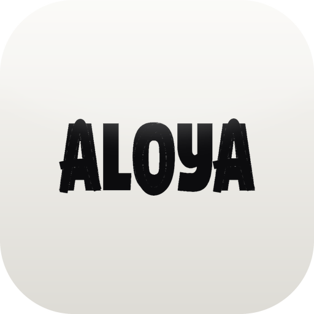
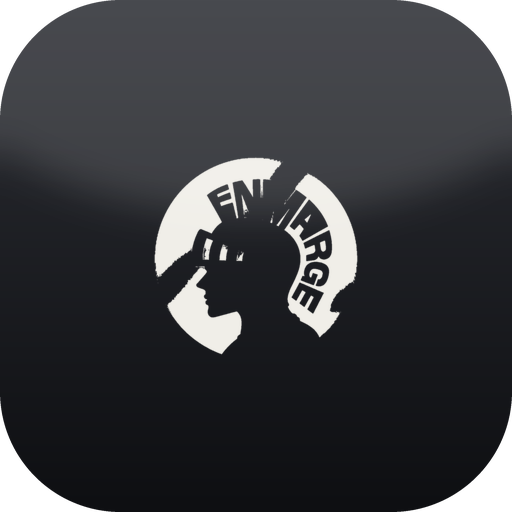
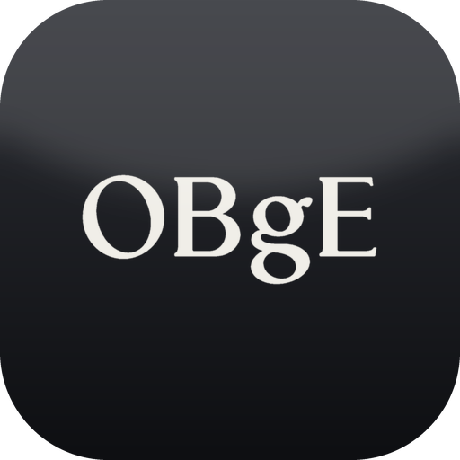
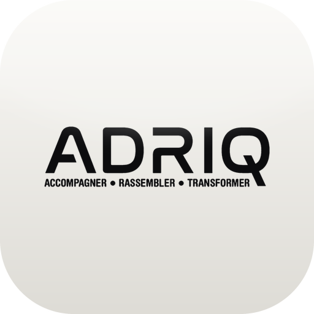
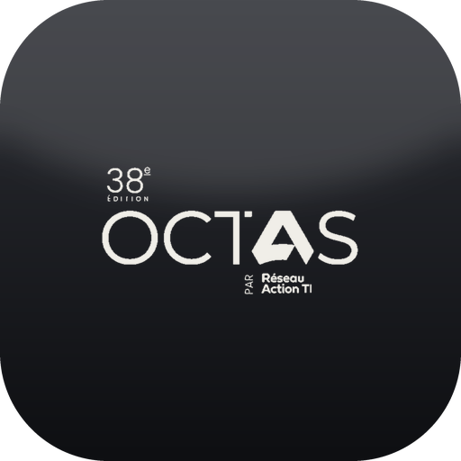
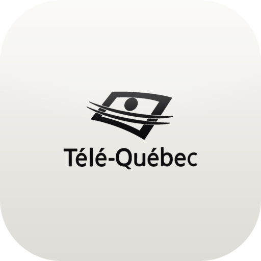

free call20 min, on Calendly
Keyu Hu: visual storyteller, content strategist and editor in Montréal.
Keyu Hu / Montréal
Short videos for brands. Made for Instagram.
Videos people watch to the end
Book a free callSelected work
Press a film to watch it with sound
Clients and partners
Festivals, venues and causes I've filmed for.

Aloya Festival- Société des arts technologiques (SAT)
- What's Up Montréal

En Marge
Obge Global- Académie Santé Sourire
Services
Ways to work with me.
Pick one, or book a free 20-minute call and we'll work out which fits.
- 01
Get featured
Your product in one of my Instagram videos. Sponsored, PR or affiliate.
Book a call - 02
Brand film
Concept, shoot and edit. You approve the plan and the final cut.
Book a call - 03
Event coverage
Your event filmed as a recap for my channels, with clips for yours.
Book a call - 04
Monthly content
A content plan for your brand, filmed and edited every month.
Book a call - 05
1:1 content coaching
For creators and business owners: your page reviewed, and a clear plan.
Book a call
Included in every project
- 48–72h first cut
- 2 revision rounds
- 3 hook versions per video
- Replies within a day
- A free call with 3 ideas
Founding Brand Partners
Three spots for my first long-term brand partners, at founding rates, with my full attention. Could your logo be next?
Three myths about branded content
Your audience can smell an ad.So I make videos they'd watch anyway.
-
Myth 01 / 03They skip ads, not brands.
People skip branded content.People watch to learn something or feel something, even with a brand in it.
-
Myth 02 / 03It needs the right person.
Premium video needs a film crew.Premium is decided before the camera rolls: hook, framing, light, pacing, sound.
-
Myth 03 / 03Strategy is what sells.
If it looks good, it will sell.Every video is planned around what your audience needs to see before they buy.
Case study
I break down every video I make.
The Art of Asking, beat by beat. Scroll to step through it.
- 0–10 sHook with proof
A bold claim, with the wristbands already in hand.
- 10–22 sA villain everyone shares
$50 tickets, $80 Fast Passes, $10 water.
- 22–33 sThe lightbulb
People leaving the park throw away valid passes.
- 33–53 sReal tension, real footage
Cold-approaching families at the exit. Will it work?
- 53–73 sPayoff, and a reason to share
Skipping the queues, then a +4 Charisma stat screen.
-
How we work together
Creative instinct. Scientific process.
The same six steps on every project. Each round learns from the last.
- R01
Research
Your brand, audience and competitors.
- H02
Hypothesis
One clear bet, written before filming.
- E03
Experiment
Shoot, edit, test different hooks.
- A04
Analyze
Retention, watch time, saves, shares.
- C05
Conclusion
What worked, what didn't, and why.
- I06
Iterate
The next round starts from the winners.
Why trust me
Trained in a lab. Sharpened on the feed.
Project file / VisionnAIreI built a low-cost AI that detects eye disease. I make videos the same way.
- 97%+
- accuracy
- 8
- major eye diseases it detects, plus healthy eyes
- 10+
- awards and honours, including Gold at the Canada-Wide Science Fair
Recognized by national and provincial awards, TV and radio



I've been on the brand side too
I founded Nymeris, a student clothing brand.
- 2
- collections sold out
- 11
- people on the team I led
Dear brand,
I never really set out to become a content creator. I've always just liked creating things.
When I was younger, it was drawings and paintings. Then I got into science and research. I loved that you could start with an idea, figure out how to make it work, test it, fail, change something, and try again.
That way of thinking ended up following me everywhere.
I started making science projects. I got involved in research. I played sports, organized events, travelled, joined student leadership organizations, and somehow always found another project to start.
Eventually, I started filming it.
At first, it was just because I wanted to remember these moments. But I also realized that I loved the process of turning something that happened in real life into a story that someone else would also want to watch and take inspiration from.
That became the videos I created.
A research project. A random trip with friends. Trying a new sport. Exploring Montréal. Going to an event. Building something from scratch.
I film the things I'm genuinely curious about, and I think that's why people connect with it. I'm not trying to look like I have life figured out. I'm a student trying things, making mistakes, meeting people, and trying to build something great to positively impact my environment.
Then something unexpected happened.
People started asking me to make videos for them.
Brands, businesses, events, restaurants and other creators started seeing the same thing I was doing for myself and asking, "We love your work! Can you do that for us?"
That's how this became more than just my personal content.
Today, I see what I do as sitting somewhere between a creator and a creative marketing studio.
On one side, I make content around my own life and build an audience that trusts my taste. On the other, I work directly with brands to turn their ideas, products and experiences into videos people actually want to watch.
And I think doing both makes me better at each.
When I'm making my own content, I learn what makes a real person stop scrolling, keep watching, and actually care.
When I'm working with a brand, I get to take that knowledge and apply it to their story.
I don't believe good branded content should feel like an advertisement with a creator standing in front of it.
It should feel like something you would have watched anyway.
That's the standard I try to bring to everything I make. I want the content to feel natural enough that my audience trusts it, but intentional enough that a brand knows why it is working.
So, ready to build something iconic that actually converts?
Let's collaborate! Book a call or shoot me an email at keyuhu.ca@gmail.com to pitch your project.
Keyu
- 18filming for festivals & brands
- Montréalshooting wherever the idea goes
- EN / FR / 中文English, French & Mandarin
- IRIC, UdeMresearch intern, cancer biology
- Cultural Affairsled it for my student union
- Dean's ListHealth Science, Marianopolis
- The teamnever a solo act
01Who are you, and why should I trust you with my brand?
I'm Keyu, a creator and editor in Montréal. I started filming on an iPhone 13 and taught myself everything from framing to colour grading. Since then: videos for festivals, venues and causes, national awards for my research, and a clothing brand that sold out twice. Judge me by the work above. The first call is free.
02Will it look like an ad?
No, and that's the point. Every video is worth watching on its own: it tells a story, teaches something useful or makes people feel something. Your product comes in the way I'd actually use it, and it still says exactly what you need it to say.
03Do you help with strategy, or only make videos?
Strategy comes first. I look at your audience, your competitors and what's performing in your space, then plan the hooks and formats. After posting, I read the watch time and comments to make the next one better.
04What do you need from us to get started?
A short call about your brand, your audience and what you want people to do after watching. I handle concept, plan, filming and editing. You approve the plan before I shoot and the cut before anything goes live.
05How fast is the first cut?
Two to three business days after filming. Launching tomorrow? Ask about a 24h rush.
06What if I don't like the edit?
Every video includes two rounds of revisions. Most land in one, because we agree on the hook and structure before I start editing.
07Can you film, or do you only edit?
Both. I can edit footage you send me, or come film in and around Montréal, with a small team I trust for bigger shoots.
08Do you work with creators too?
Yes. If you want to make better content yourself, I offer 1:1 content coaching (offer 05 above).
09Which platforms and languages?
Mainly Instagram, made vertical-first so it also works on TikTok and YouTube Shorts. We can work in English, French or Mandarin.
3 spots open for next month
Let's build something iconic.
20 minutes, free. I'll bring 3 ideas for your brand, whether we work together or not.
Prefer email? Pitch your project:
keyuhu.ca@gmail.com
Up to 4 brands at a time, so each one gets my full attention.